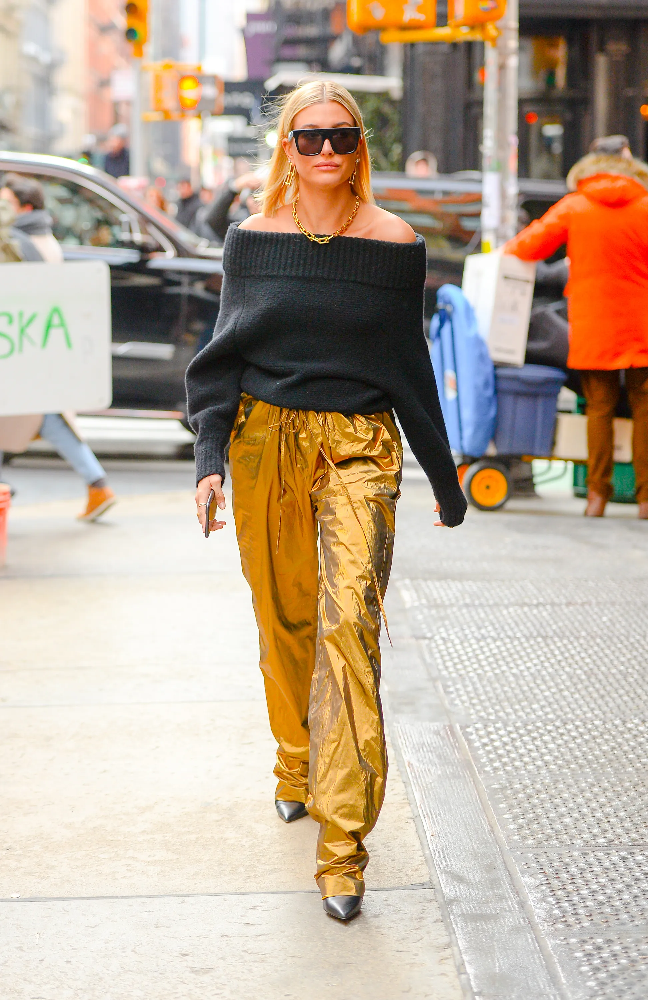
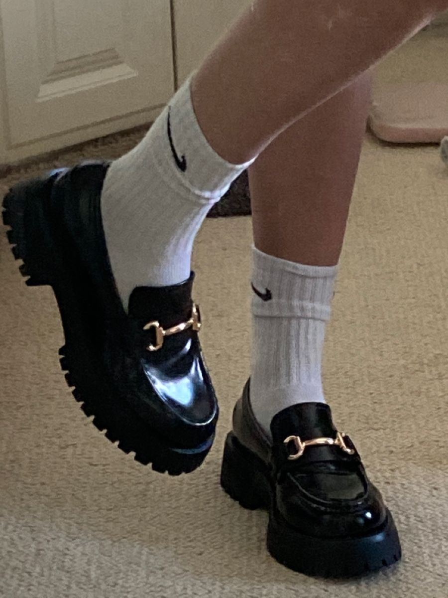
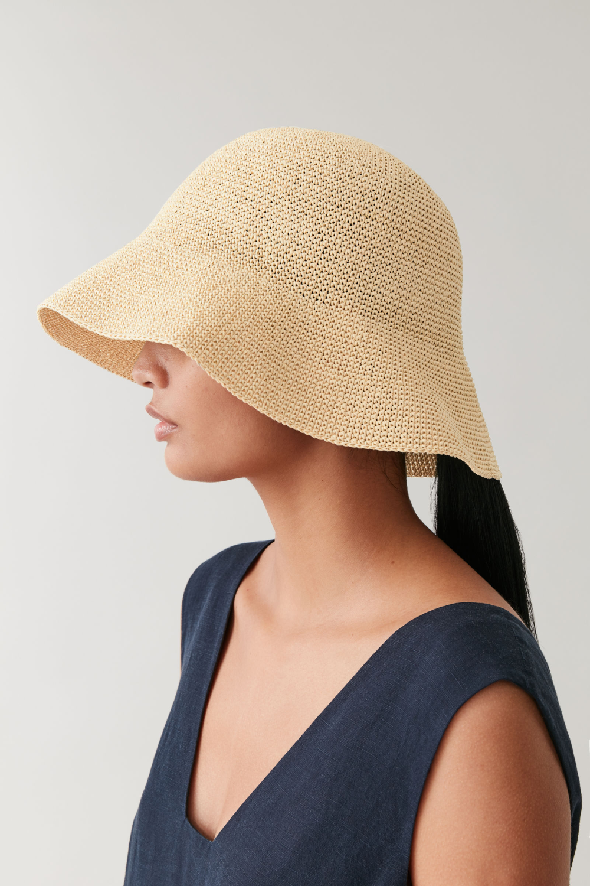
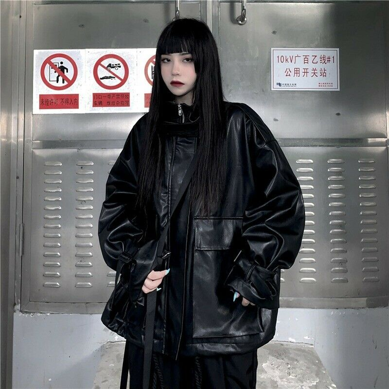
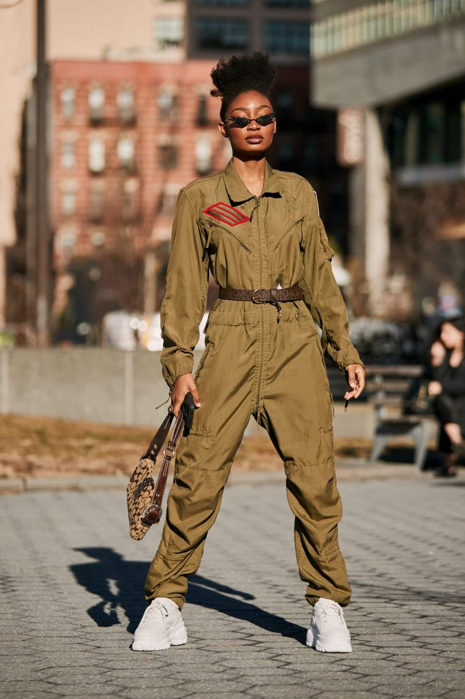
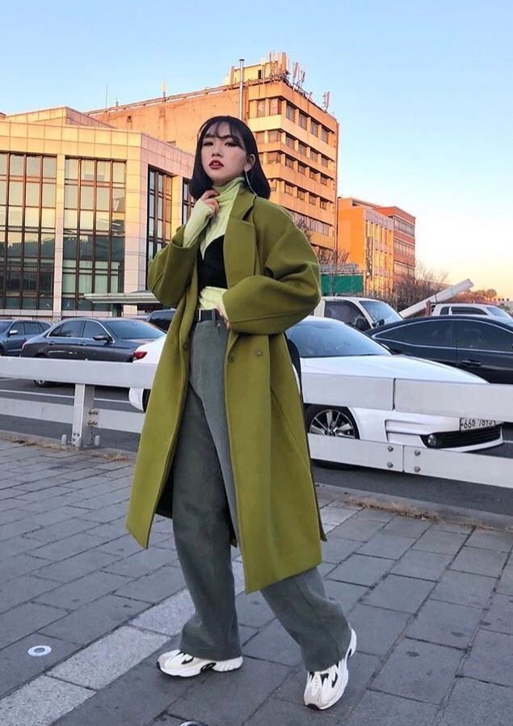

Vogue Luxembourg
Produits
La liste à venir de nouveaux vêtements pour que vous soyez prêt:
- Pantalon à jambes larges
- Conflit de couleurs
- Mocassins Chunky
- Chapeaux de seau
- Manches bouffantes
- Veste en cuir
- Combinaisons de chaudière
- Vestes bomber surdimensionnées
- Cardigans recadrés
- Tranchée décontractée

Prix : 35$
Les pantalons à jambes larges sont de retour à la mode avec vengeance. Peut les porter affaissés, lâches, extra-longs et même baggy, tant que vous les équilibrez avec un haut coupé ou mince

Prix : 128$
Clash rose avec jaune, orange avec bleu ou vert avec noir pour créer certains des effets les plus visuels

Prix : 60$
Assortissez vos mocassins en cuir breveté avec un effet crocodile

Prix : 20$
Les chapeaux seaux en denim ont fière allure avec un trench-coat tueur

Prix : 37$
Assortissez-le d’un foulard pour créer ce look frais sur votre course à l’épicerie ou occasionnellement

Prix : 253$
Gagnante des styles de mode des années 80, leader des tendances mode des années 90, la veste en cuir est une tenue incontournable pour tous les styles

Prix : 44$
Un article essentiel si vous voulez ressembler à un modèle légendaire, assurez-vous simplement d’ajouter une ceinture assortie

Prix : 85$
Associez-le à des sox de grande hauteur et à des baskets surdimensionnées pour un look londonien super décontracté

Prix : 29$
mélangez vos cardigans coupés avec un pantalon de survêtement lounge ou une jupe midi pour un meilleur look

Prix : 25$
prenez un trench et portez-le sur une robe à fleurs ou un col roulé en laine côtelée avec des talons assortis